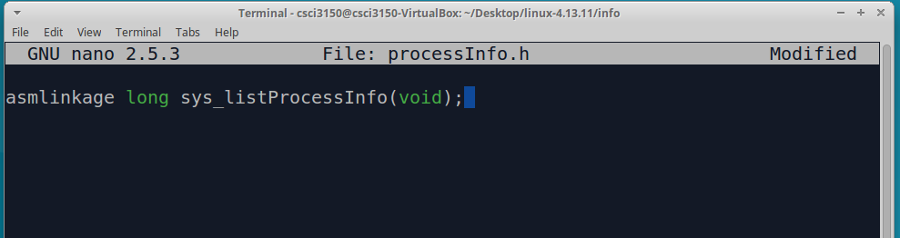
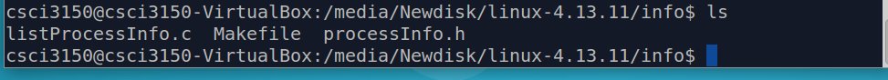

Defining our system call
Okay, we will define our own system call now. This new system call will print the current process info and its parent process info (if any) into the kernel org.
Create a new directory, say 'info' and change to this directory. We'll maintain the necessary header file(s) and implementation file(s) for the system call in this directory.
mkdir info
cd info
Create a header file 'processInfo.h' that will contain the necessary function declarations, structure declarations, macros, etc. For this example, we will only be using it to declare the function prototype.
Include the following line in the header file. Here, asmlinkage tells the compiler to look at the CPU’s stack for the function parameters.
asmlinkage long sys_listProcessInfo(void);
 Now, let’s define our system call in ‘listProcessInfo.c’.
#include<linux/kernel.h>
#include<linux/init.h>
#include<linux/sched.h>
#include<linux/syscalls.h>
#include "processInfo.h"
asmlinkage long sys_listProcessInfo(void) {
/*The task_struct structure stores all the details of every process that exists in the system,
and all the processes in turn are stored in a circular double linked list.*/
struct task_struct *proces;
/*for_each_process is a macro, it will iterate through the list of all the processes.*/
for_each_process(proces) {
/*printk is a function that prints messages exclusively for the Linux Kernel.*/
printk(
"Process: %s\n \
PID_Number: %ld\n \
Process State: %ld\n \
Priority: %ld\n \
RT_Priority: %ld\n \
Static Priority: %ld\n \
Normal Priority: %ld\n", \
proces->infcomm, \
(long)task_pid_nr(proces), \
(long)proces->state, \
(long)proces->prio, \
(long)proces->rt_priority, \
(long)proces->static_prio, \
(long)proces->normal_prio \
);
if(proces->parent)
printk(
"Parent process: %s, \
PID_Number: %ld", \
proces->parent->comm, \
(long)task_pid_nr(proces->parent) \
);
printk("\n\n");
}
return 0;
}
(We used Linux Data Structures to get an idea of the kind of data structures being used. Note that this is based on an old 2.0.33 version. So, some of the fields have changed since then. For example, the ‘parent’ field (in the above code) was called ‘p_pptr’ in the older kernels. You’ll have to look into current source code to figure out the differences)
Write a Makefile in the same directory(i.e., info/) with the following contents:
obj-y:=listProcessInfo.o
This is to ensure that the listProcessInfo.c file is compiled and included in the kernel source code.
Now, this directory looks like:

Next, we will set to link our system call implementation with the existing kernel!